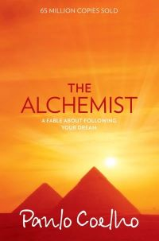
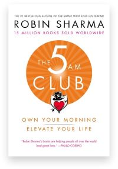
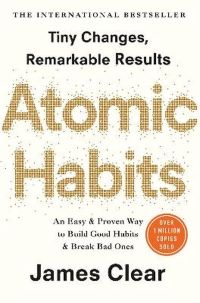

Combining magic, mysticism, wisdom and wonder into an inspiring tale of self-discovery, The Alchemist has become a modern classic, selling millions of copies around the world and transforming the lives of countless readers across generations.
Paulo Coelho's masterpiece tells the mystical story of Santiago, an Andalusian shepherd boy who yearns to travel in search of a worldly treasure. His quest will lead him to riches far different—and far more satisfying—than he ever imagined. Santiago's journey teaches us about the essential wisdom of listening to our hearts, of recognizing opportunity and learning to read the omens strewn along life's path, and, most importantly, to follow our dreams.

Part manifesto for mastery, part playbook for genius-grade productivity and part companion for a life lived beautifully, the 5 am club is a work that will transform your life. Forever.
Legendary leadership and elite performance expert Robin Sharma introduced The 5 AM Club concept over twenty years ago, based on a revolutionary morning routine that has helped his clients maximize their productivity, activate their best health and bulletproof their serenity in this age of overwhelming complexity.
Now, in this life-changing book, handcrafted by the author over a rigorous four year period, you will discover the early-rising habit that has helped so many accomplish epic results while upgrading their happiness, helpfulness and feelings of aliveness.

No matter your goals, Atomic Habits offers a proven framework for improving--every day. James Clear, one of the world's leading experts on habit formation, reveals practical strategies that will teach you exactly how to form good habits, break bad ones, and master the tiny behaviors that lead to remarkable results.
If you're having trouble changing your habits, the problem isn't you. The problem is your system. Bad habits repeat themselves again and again not because you don't want to change, but because you have the wrong system for change. You do not rise to the level of your goals. You fall to the level of your systems. Here, you'll get a proven system that can take you to new heights.
Louise’s key message in this powerful work is: “If we are willing to do the mental work, almost anything can be healed.” Louise explains how limiting beliefs and ideas are often the cause of illness, and how you can change your thinking…and improve the quality of your life.